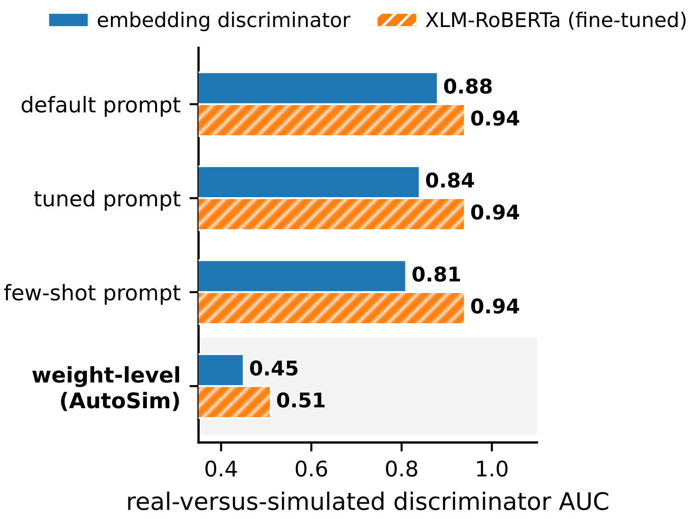
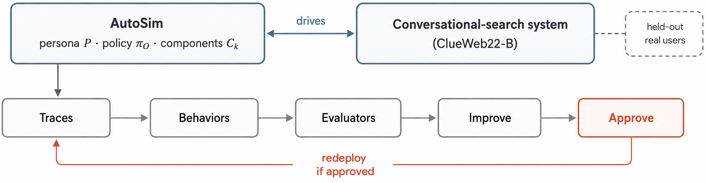
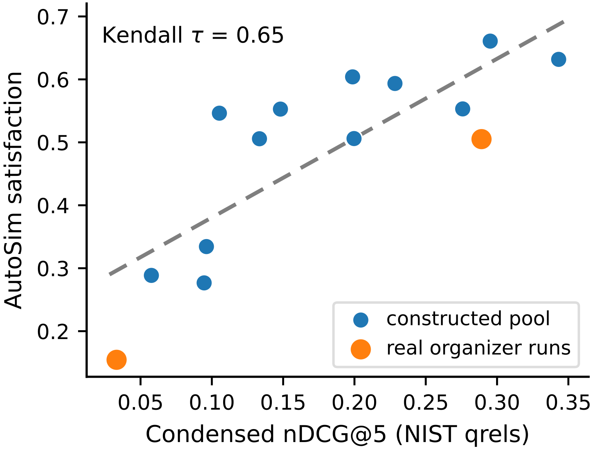

目录 · 6 节
1问题：模拟器可信吗，改哪里才能更像人2方法：AutoSim 和它的自我改进循环3第一个问题：它是有效的评测器4第二个问题：提示词有上限，权重没有5第三个问题：像不像人，会改变评测结论6局限与实践意义让一个强 LLM 扮演搜索用户，它每条消息平均写 37.5 个词，真实用户只有 12.8 个。一个没见过训练数据的判别器能以 AUC 0.88 认出它写的话，同一轮里，它写的查询检索回来的前 5 个段落，和真人查询检索回来的前 5 个段落几乎没有重合（overlap@5 只有 0.01）。这篇 SIGIR-AP 2026 论文研究的对话搜索用户模拟器 AutoSim 就处在这种状态：它给检索系统的排名在三个 TREC iKAT 年份上都和 NIST 一致（Kendall τ 分别为 0.66、0.91、0.91），说话方式却离真人很远。作者用留出的真实用户数据约束模拟器的自我改进，结论很清楚：只改提示词，判别器 AUC 降不到 0.85 以下；改模型权重，AUC 降到 0.45，连人读完整段对话都分不出来。更重要的是，像不像人会改变评测结论。在真实用户检索效果很差的地方，靠提示词的模拟器把 nDCG 高估了 0.136，足以改变上线决策。

1. 问题：模拟器可信吗，改哪里才能更像人
有了用户模拟器，对话搜索系统不用每改一次设计就做一次人工实验，调排序器、调澄清问题的策略时都能做可复现的比较。但模拟器的人设、提示和规则在设计时就定死了，被评的系统变了，它也不会跟着变。已有研究还发现它本身就不可靠：只换底层的用户模型，被评智能体的任务成功率就会摆动约 9 个百分点，通用 LLM 模拟器还会系统性地高估成功率。而且更像人的模拟器，不一定是更准的评测器。
作者因此问了三个问题。第一，AutoSim 能不能像 NIST 一样给检索系统排名？第二，自我改进能不能缩小它和真人的行为差距，该改提示还是改权重？第三，差距缩小以后，它是不是更好的评测器？作者先做了一轮诊断，发现默认模拟器的相关性判断已经和 NIST 一致，差距出在“用户说什么、问什么”上，而改生成提示词补不上这个差距。所以整体设计是：相关性评审保持不动，只在权重层面改写话语的生成器。
2. 方法：AutoSim 和它的自我改进循环

AutoSim 的核心仍是一个普通的 LLM 生成器，只是外面包了一层用户状态。状态里有人设、当前的信息需求、对话历史，还有满意、沮丧、耐心这类隐含的情绪。人设取自 iKAT 的个人文本知识库（PTKB），也就是每个话题附带的一组描述用户背景的陈述句。每一轮由一个编排策略决定谁来行动：改写查询、点击、停止这类常规动作交给规则写好的确定性模拟器；回答澄清问题、给反馈、表示满意、写下一句话则交给 LLM。
模拟器里有两个部分可以改。一个是相关性判断的指令，它决定模拟器对结果满不满意，也就决定了它给系统的排名。另一个是话语生成器，也就是写出模拟用户说什么的模型，它既可以改提示，也可以改参数，这正是全文比较的核心。
为了衡量模拟器和真人差多远，作者把“系统排名是否和 NIST 一致”和“行为分布是否和真人一致”合在一起，称为对话搜索的模拟-真实差距（CSG）。其中沟通风格这一项有两种测法。一种看平均词数、礼貌用语比例、极短消息比例这类统计量，好读，也容易直接写进提示。另一种是在留出数据上训练一个判别器，区分真实话语和模拟话语，报告 ROC AUC，0.5 表示分不出来。后者是对抗式的标准，靠凑几个数字过不了关。后文会看到，这两种测法给出的结论不一样，这本身就是一个结果。
自我改进循环每一轮先记录模拟器的完整轨迹，包括每轮选了什么动作、检索到什么、点了什么、说了什么。然后把模拟行为和真实行为的差异聚成几类（比如“消息太长”“太客气”），请一个和生成器不同家族的模型给每一类写一个评估器，专门给模拟轨迹在这一类差异上打分。改进用的是反思式的种群搜索：这个模型看着评估器指出的差距，一次写出 N 个修改方案（比如改写生成提示），每个方案都在校准集上用这些评估器打分（论文没有给出各类评分怎样加总），挑出最好的一个；它的分数不低于修改前才保留，否则这一轮什么都不改。另有一个滚动更新的留出集只用来观察效果，不参与是否接受修改的决定。
权重层面的改法更直接。作者先用真实的 iKAT 话语给 Qwen2.5-3B 做 LoRA 微调，作为起点，然后跑 4 轮对抗式的拒绝采样：每一轮对每个留出轮次（不在微调数据里的 82 个 iKAT 轮次，判别器的 AUC 也在这些轮次上算，按轮次分组做五折交叉验证；和上面提示词循环里那个只用来观察的滚动留出集不是一份）生成多条候选话语，留下冻结的判别器认为最像人的那些，在上面继续微调，再重新训练判别器。
评测用的是 iKAT 2023、2024 和多会话的 2025 三年数据，分别有 176、116 和 45 个带人工标注的轮次，都基于 ClueWeb22-B 语料和 NIST 的段落级相关性标注。作者每年搭了 12 个检索系统，零件有三种一阶段检索（BM25、SPLADE、RRF）、三种查询形式（原始查询、做过上下文消解的查询、用人设扩展的查询），以及加不加交叉编码器重排；从这些组合里挑出 12 个，让效果从很弱到很强都有覆盖；2023 年还加入两个真实的官方参赛运行，共 14 个。参照排名用 NIST 标注上的 nDCG@5，而且只在人工标注过的段落上算（论文叫 condensed nDCG@5），这样没参加标注池的系统不会因为找到未标注的相关段落而吃亏；AutoSim 的排名则是：让它按人设逐个判断每个系统返回的前 5 个段落满不满意（满意与否由它的相关性判断提示词决定），对每个系统取平均，再按平均值排序。为了不依赖闭源 API，验证全部用两个不同家族的开源指令模型（80B 级的 Qwen 和 31B 级的 Gemma），温度设为 0。
3. 第一个问题：它是有效的评测器
在 iKAT 2023 的 12 个系统上，AutoSim 和 NIST 排名的 τ 是 0.66，统计上显著。这个结果也很稳定：12 个系统每次去掉一个再算，τ 在 0.59 到 0.73 之间；让 AutoSim 把全部系统重新跑一遍、重新打分，重复五次，τ 每次的差别只有 ±0.01。所以排名一致不是靠某一个系统撑起来的，也不是某一次运行的偶然。加入两个官方运行后 τ 是 0.65。AutoSim 和 NIST 一样把弱的自动改写运行排在最后，最大的分歧是那个用人工改写查询的强运行：NIST 把它排第 3，AutoSim 排到了第 10。

iKAT 2024 和 2025 上 τ 都达到 0.91。换到没有人设、语料也不同的 TREC CAsT 2020，τ 降到 0.56 左右，说明它能迁移，但效果打了折扣。这种排名能力从哪来？作者做了两个对照。去掉人设以后，相关性评审的 τ 是 0.79，和带人设时差不多；换成另一家族的评审（Gemma 换 Qwen），2024 年的排名完全不变。所以排名有效靠的是强 LLM 本来就会判断相关性，而不是人设。它的弱点在质量接近的系统上：只看最接近的 6 个系统，2023 年的 τ 降到 0.33，已经不显著了。
4. 第二个问题：提示词有上限，权重没有
先看只改提示的情况。在 12 个随机种子下，带校准检查的完整循环把留出数据上的沟通风格吻合度（看三个统计量和真人有多接近：平均每条消息的词数、带礼貌用语的消息比例、极短消息的比例；越高越像真人，论文没有给出三者怎样合成一个分数）从 0.56 提到 0.76，提升显著；去掉校准检查，只提到 0.63，和不改进差别不显著，说明校准检查是必要的。但细看就会发现循环学偏了：平均词数确实从 37.5 降到了 11.0，礼貌用语的比例却冲到 39%，比真人的 12% 高得多，真人那 5% 的极短消息也没学会。
还有更说明问题的对比。一行手写提示“写一条约 12 个词的短消息，省掉客套”，在同一批对话轮次上，这个分数（0.80）比循环找到的提示（0.68）还高；这批轮次和上面 12 个种子平均的 0.76 不是同一口径，论文没有细说，所以两者不能直接比。手写提示更高，因为三个统计量直接写进提示，比靠搜索去凑容易。少样本提示直接给真实的简短话语做示例，长度已经对上了（12.3 个词），判别器的 AUC 却还是 0.94。也就是说，统计量对上了，判别器照样一眼认出。
改权重的效果完全不同，判别器 AUC 的变化如下：
| 自我改进方式 | 判别器 AUC |
|---|---|
| 无（默认提示） | 0.88 |
| 提示层面（四种方法中最好的） | 0.84 |
| 权重层面，真实数据 LoRA 起点 | 0.45 |
| 权重层面，再加对抗轮次 | 0.42–0.50 |
作者排除了两种可能的解释。一是判别器太弱。另训一个 XLM-RoBERTa 判别器，它几乎能完美认出默认模拟器（AUC 0.94），对权重级模拟器却只有 0.51；而对只加了一点礼貌用语的真实话语，它能以 0.99 认出来，所以判别器并不弱。二是结果只对一个模型成立。换成 Qwen2.5-7B 或 Mistral-7B 做生成器，默认版本都几乎被完全识破，权重级版本都在 0.5 上下。
人的判断也一样。三名标注员读完整段对话，判断它是不是模拟器写的，每人判 30 次，随机猜平均能猜对 15 次。“认出”指正确判断出对话出自模拟器；每次判断给标注员看什么（单段对话还是真人和模拟成对），论文正文没有写。默认模拟器 30 次里能认出 28 到 30 次，权重级模拟器只认出 4 到 11 次，都不到 15 次，也就是比瞎猜还差。查询有没有对准信息需求，也能看出差别。iKAT 为每一轮提供了一个补全上下文、能单独成立的改写，代表这一轮的完整需求。作者用模拟器下一轮写的查询和下一轮的这个改写之间的词重合度来衡量（论文没有说明分母取哪一方的词数）：真人是 0.56，权重级模拟器是 0.51，默认模拟器只有 0.23，因为客套话冲淡了需求。最短的那个简洁提示（9.6 个词）反而最差，只有 0.19，说明查询短不等于对准了需求。
相关性评审的情况又不一样。在校准检查下，对评审提示的所有修改都没被接受；不加检查时，修改让 τ 最多变动约 0.1，在采样噪声范围内。所以自我改进能改变模拟用户“怎么说话”，改不了它“怎么判断相关”。
5. 第三个问题：像不像人，会改变评测结论
系统排名的 τ 没变，因为排名本来就是对的。差别出现在训练从没优化过的地方：拿模拟器自己写的查询去检索，效果到底有多好。作者在 157 个留出轮次上，用各模拟器的查询跑 BM25，和真实用户查询的 nDCG@5 比较。表里“长度匹配截断”是把默认模拟器的冗长查询截短到和真人查询差不多的长度（平均 11 个词），论文没有说是逐条按对应真人查询截，还是统一截到一个长度。
| 查询来源 | 词数 | iKAT 2024 偏差 | 2023 留出偏差 |
|---|---|---|---|
| 默认（冗长） | 28 | +0.136 | +0.009 |
| 简洁提示 | 9 | +0.087 | −0.028 |
| 长度匹配截断 | 11 | +0.071 | −0.042 |
| 权重级 | 12 | +0.014 | +0.015 |
2024 年的数据更难，而且训练时完全没见过。真实用户在这里的平均 nDCG 只有 0.016，默认模拟器高估了 0.136，简洁提示和截断到同样长度也都还高估七八个百分点，只有权重级模拟器的偏差和零没有显著差别。这说明问题不在长度：长度只能解释检索效果方差的 2%。到了真实用户检索还过得去的 2023 留出集，所有模拟器都没有可检测的偏差。所以高估恰好出现在真实用户最吃力、也最需要评测结果可信的地方。
这种偏差也没法用一个整体修正值抵消掉。2024 年这些轮次里，真实用户有 86% 什么相关内容都没找到。在这些真人失败的轮次上，默认模拟器的查询仍有 57% 能找回相关段落，而权重级模拟器只有 14%，也就是说它会在和真人同样的地方失败。放到实际决策里看：假设上线门槛是 nDCG 0.05，用默认模拟器评测 2024 年会读出 0.15，远远过线；真实用户只有 0.02，权重级模拟器报告 0.03，两者都判定这个系统不该上线。
6. 局限与实践意义
作者列了几条局限。系统池是作者自己搭的，加上两个官方运行，不是完整的参赛队伍。行为参照是组织者写的 iKAT 话语，只能代替真实日志里的用户。人工判别只有三名标注员。排名有效性只对质量差距明显的系统成立，几乎打平的系统分不太清；2025 年只有 45 个轮次，那里勉强显著的结果应当只看作描述。行为只测了沟通风格、查询改写和澄清这几方面，点击、满意度和何时停止还没测。另外要注意，权重层面的“自我改进”其实依赖真实话语做 LoRA 起点，并不是完全自举。
对在做搜索或对话产品离线评测的团队，这篇论文有两个可以直接用的提醒。第一，评估模拟器的质量，不能只看词数、礼貌率这类统计量，也不能只看系统排名的相关性：τ 很高的模拟器，仍可能把绝对效果高估一大截。最好再加一个学习出来的判别器，再检查一下模拟查询的检索效果和真人差多少。第二，如果手里有一批真实用户的话语，用 LoRA 微调一个小模型，比反复打磨提示词更能让模拟用户像真人；相关性评审则直接用强模型就行，不必花力气调。框架、协议、LoRA 适配器和人工判别实验的工具都已开源。
讨论
欢迎补充实验细节、复现经验或不同看法。需 GitHub 登录。
正在加载讨论…